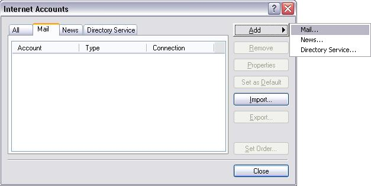
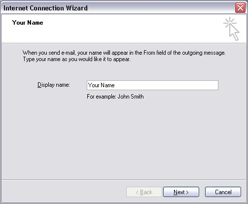
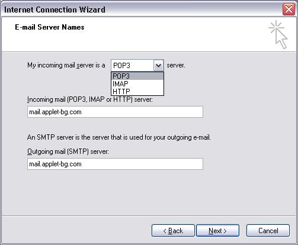
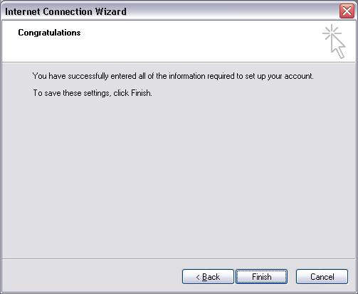
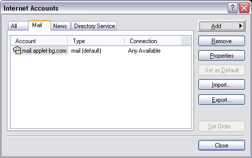
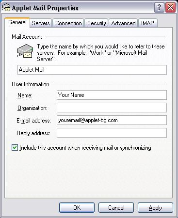
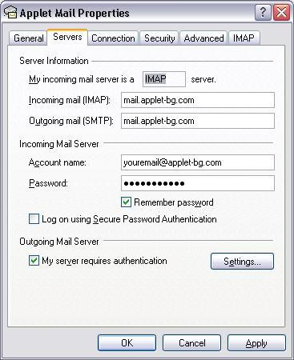
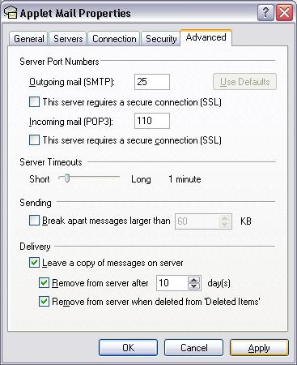
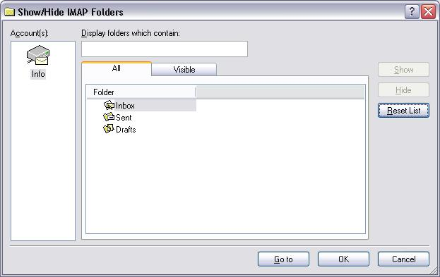
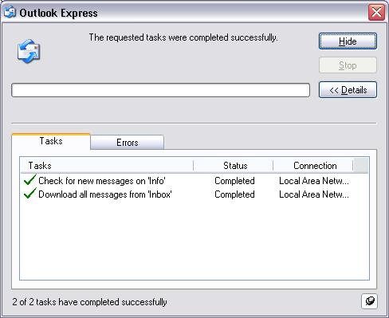

Конфигуриране на Outlook Express 6
След стартиране на Outlook Express се избира от лентата с основното меню “Tools” -> ”Accounts…” ->

Избира се Tab "Mail" -> Натиснете бутонa ”Add” -> после изберете "Mail...:

В полето ”Display Name:”, напишете си вашето име и Натиснете бутонa "Next" ->

В полето ”E-mail address:”, напишете си вашият е-мейл и Натиснете бутонa "Next", или е-мейл към вашият домейн хостван от Аплет ->

В полето ”My incoming mail server is a”, Изберете POP3 Или IMAP ->
В полето ”Incoming Mail (POP3, IMAP or HTTP) server”, напишете "mail.applet-bg.com", или вашият е-мейл сървер хостван от Аплет ->
В полето ”Outgoing Mail (SMTP) server”, напишете "mail.applet-bg.com", или вашият е-мейл сървер хостван от Аплет и натиснете бутонa "Next" ->

В полето ”Account name:”, напишете вашият е-маил адрес или е-мейл към вашият домейн хостван от Аплет ->
В полето ”Password:”, напишете вашата парола, натиснете бутонa "Next" ->

Натиснете бутонa "Finish" ->

След като сте направили пощата, остават някой настройки - отидете отново в “Tools” -> ”Accounts…” ->

Избира се Tab "Mail" -> Виждате акаунта "mail.applet-bg.com" или вашият е-мейл сървер хостван от Аплет -> Натиснете бутонa "Properties" ->

В Tab “General” -> “Mail Account” се вписва име на акаунта (Applet Mail) ->

В Tab “Servers”, отмята се кутииката “My outgoing server (SMTP) requires Authentication” ->

Ако се използва POP3, кликнете на “Advanced”, отмятат се кутиики – “Leave copy of messages on the server”, “Remove from server after 10 days” и “Remove from server when deleted from ‘Deleted Items’” ->

Ако се използва IMAP, кликнете на “Advanced”, на полето "Root folder path:" напишете "INBOX", в полето "Sent Items path:" трябва да остане само "Sent" ->

След което се потвърждава с “OK”.
Ако се използва IMAP се отговаря с "YES" ->

След което в новоотворения прозорец се избират папките от пощенската кутия който искате да се синхронизират със сървера. -> След което се потвърждава с “OK”.

Ако всичко е настроено вярно и ИМАТЕ ИНТЕРНЕТ то тогава ще се появи презорчето за проверяване на поща:
